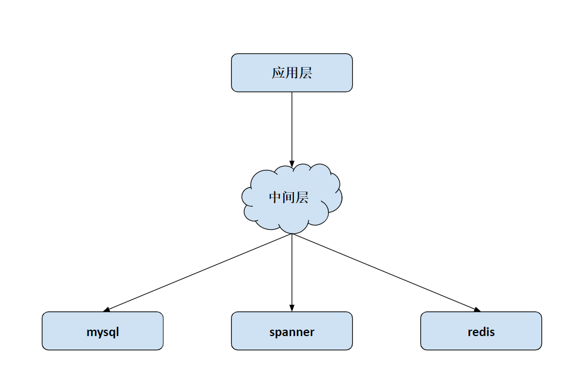
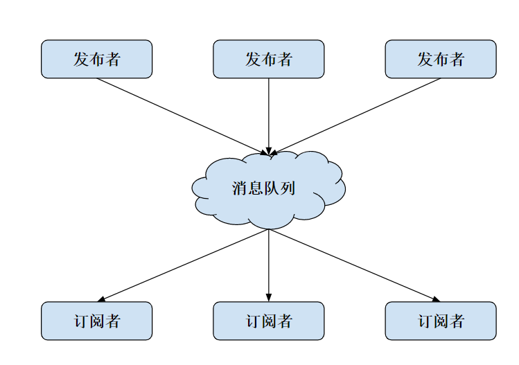
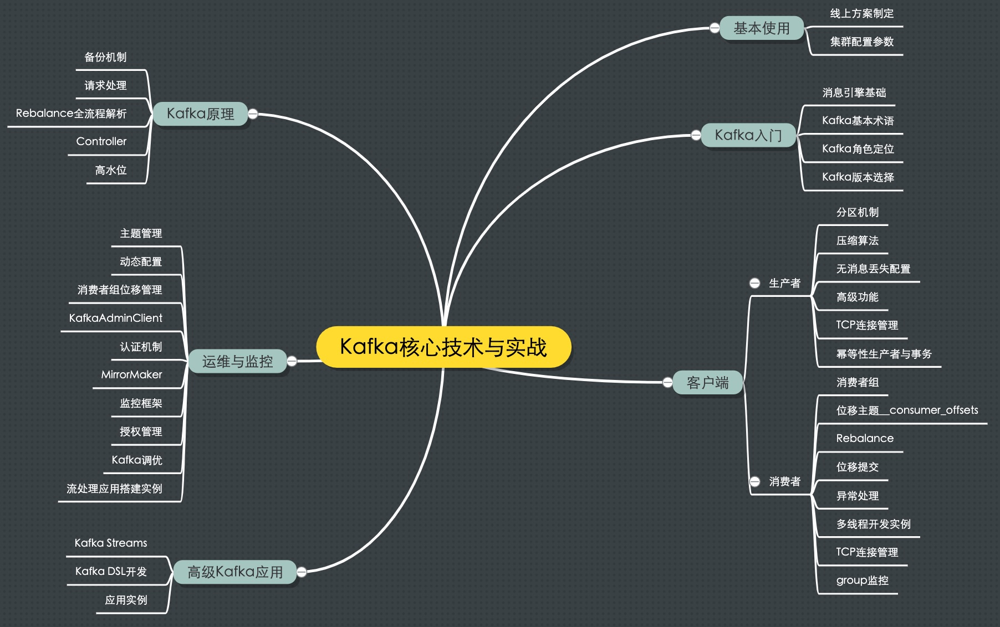
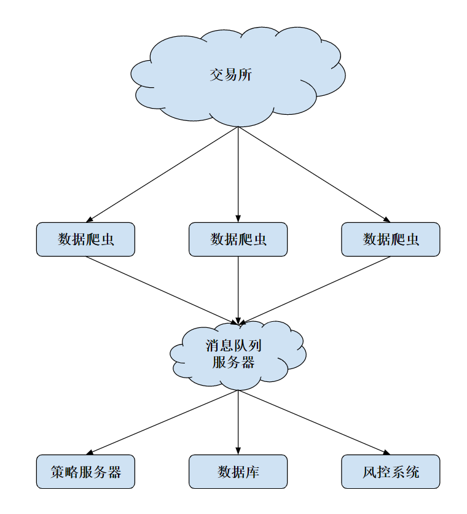

- 00 开篇词 从工程的角度深入理解Python.md.html
- 01 如何逐步突破，成为Python高手？.md.html
- 02 Jupyter Notebook为什么是现代Python的必学技术？.md.html
- 03 列表和元组，到底用哪一个？.md.html
- 04 字典、集合，你真的了解吗？.md.html
- 05 深入浅出字符串.md.html
- 06 Python “黑箱”：输入与输出.md.html
- 07 修炼基本功：条件与循环.md.html
- 08 异常处理：如何提高程序的稳定性？.md.html
- 09 不可或缺的自定义函数.md.html
- 10 简约不简单的匿名函数.md.html
- 11 面向对象（上）：从生活中的类比说起.md.html
- 12 面向对象（下）：如何实现一个搜索引擎？.md.html
- 13 搭建积木：Python 模块化.md.html
- 14 答疑（一）：列表和元组的内部实现是怎样的？.md.html
- 15 Python对象的比较、拷贝.md.html
- 16 值传递，引用传递or其他，Python里参数是如何传递的？.md.html
- 17 强大的装饰器.md.html
- 18 metaclass，是潘多拉魔盒还是阿拉丁神灯？.md.html
- 19 深入理解迭代器和生成器.md.html
- 20 揭秘 Python 协程.md.html
- 21 Python并发编程之Futures.md.html
- 22 并发编程之Asyncio.md.html
- 23 你真的懂Python GIL（全局解释器锁）吗？.md.html
- 24 带你解析 Python 垃圾回收机制.md.html
- 25 答疑（二）：GIL与多线程是什么关系呢？.md.html
- 26 活都来不及干了，还有空注意代码风格？！.md.html
- 27 学会合理分解代码，提高代码可读性.md.html
- 28 如何合理利用assert？.md.html
- 29 巧用上下文管理器和With语句精简代码.md.html
- 30 真的有必要写单元测试吗？.md.html
- 31 pdb & cProfile：调试和性能分析的法宝.md.html
- 32 答疑（三）：如何选择合适的异常处理方式？.md.html
- 33 带你初探量化世界.md.html
- 34 RESTful & Socket：搭建交易执行层核心.md.html
- 35 RESTful & Socket：行情数据对接和抓取.md.html
- 36 Pandas & Numpy：策略与回测系统.md.html
- 37 Kafka & ZMQ：自动化交易流水线.md.html
- 38 MySQL：日志和数据存储系统.md.html
- 39 Django：搭建监控平台.md.html
- 40 总结：Python中的数据结构与算法全景.md.html
- 41 硅谷一线互联网公司的工作体验.md.html
- 42 细数技术研发的注意事项.md.html
- 43 Q&A：聊一聊职业发展和选择.md.html
- 加餐 带你上手SWIG：一份清晰好用的SWIG编程实践指南.md.html
- 结束语 技术之外的几点成长建议.md.html
- 捐赠
37 Kafka & ZMQ：自动化交易流水线
你好，我是景霄。
在进行这节课的学习前，我们先来回顾一下，前面三节课，我们学了些什么。
第 34 讲，我们介绍了如何通过 RESTful API 在交易所下单；第 35 讲，我们讲解了如何通过 Websocket ，来获取交易所的 orderbook 数据；第 36 讲，我们介绍了如何实现一个策略，以及如何对策略进行历史回测。
事实上，到这里，一个简单的、可以运作的量化交易系统已经成型了。你可以对策略进行反复修改，期待能得到不错的 PnL。但是，对于一个完善的量化交易系统来说，只有基本骨架还是不够的。
在大型量化交易公司，系统一般是分布式运行的，各个模块独立在不同的机器上，然后互相连接来实现。即使是个人的交易系统，在进行诸如高频套利等算法时，也需要将执行层布置在靠近交易所的机器节点上。
所以，从今天这节课开始，我们继续回到 Python 的技术栈，从量化交易系统这个角度切入，为你讲解如何实现分布式系统之间的复杂协作。
中间件
我们先来介绍一下中间件这个概念。中间件，是将技术底层工具和应用层进行连接的组件。它要实现的效果则是，让我们这些需要利用服务的工程师，不必去关心底层的具体实现。我们只需要拿着中间件的接口来用就好了。
这个概念听起来并不难理解，我们再举个例子让你彻底明白。比如拿数据库来说，底层数据库有很多很多种，从关系型数据库 MySQL 到非关系型数据库 NoSQL，从分布式数据库 Spanner 到内存数据库 Redis，不同的数据库有不同的使用场景，也有着不同的优缺点，更有着不同的调用方式。那么中间件起什么作用呢？
中间件，等于在这些不同的数据库上加了一层逻辑，这一层逻辑专门用来和数据库打交道，而对外只需要暴露同一个接口即可。这样一来，上层的程序员调用中间件接口时，只需要让中间件指定好数据库即可，其他参数完全一致，极大地方便了上层的开发；同时，下层技术栈在更新换代的时候，也可以做到和上层完全分离，不影响程序员的使用。
它们之间的逻辑关系，你可以参照下面我画的这张图。我习惯性把中间件的作用调侃为：没有什么事情是加一层解决不了的；如果有，那就加两层。

当然，这只是其中一个例子，也只是中间件的一种形式。事实上，比如在阿里，中间件主要有分布式关系型数据库 DRDS、消息队列和分布式服务这么三种形式。而我们今天，主要会用到消息队列，因为它非常符合量化交易系统的应用场景，即事件驱动模型。
消息队列
那么，什么是消息队列呢？一如其名，消息，即互联网信息传递的个体；而队列，学过算法和数据结构的你，应该很清楚这个 FIFO（先进先出）的数据结构吧。（如果算法基础不太牢，建议你可以学习极客时间平台上王争老师的“数据结构与算法之美”专栏，第 09讲即为队列知识）
简而言之，消息队列就是一个临时存放消息的容器，有人向消息队列中推送消息；有人则监听消息队列，发现新消息就会取走。根据我们刚刚对中间件的解释，清晰可见，消息队列也是一种中间件。
目前，市面上使用较多的消息队列有 RabbitMQ、Kafka、RocketMQ、ZMQ 等。不过今天，我只介绍最常用的 ZMQ 和 Kafka。
我们先来想想，消息队列作为中间件有什么特点呢？
首先是严格的时序性。刚刚说了，队列是一种先进先出的数据结构，你丢给它 1, 2, 3，然后另一个人从里面取数据，那么取出来的一定也是 1, 2, 3，严格保证了先进去的数据先出去，后进去的数据后出去。显然，这也是消息机制中必须要保证的一点，不然颠三倒四的结果一定不是我们想要的。
说到队列的特点，简单提一句，与“先进先出“相对的是栈这种数据结构，它是先进后出的，你丢给它 1, 2, 3，再从里面取出来的时候，拿到的就是3, 2, 1了，这一点一定要区分清楚。
其次，是分布式网络系统的老生常谈问题。如何保证消息不丢失？如何保证消息不重复？这一切，消息队列在设计的时候都已经考虑好了，你只需要拿来用就可以，不必过多深究。
不过，很重要的一点，消息队列是如何降低系统复杂度，起到中间件的解耦作用呢？我们来看下面这张图。

消息队列的模式是发布和订阅，一个或多个消息发布者可以发布消息，一个或多个消息接受者可以订阅消息。 从图中你可以看到，消息发布者和消息接受者之间没有直接耦合，其中，
- 消息发布者将消息发送到分布式消息队列后，就结束了对消息的处理；
- 消息接受者从分布式消息队列获取该消息后，即可进行后续处理，并不需要探寻这个消息从何而来。
至于新增业务的问题，只要你对这类消息感兴趣，即可订阅该消息，对原有系统和业务没有任何影响，所以也就实现了业务的可扩展性设计。
讲了这么多概念层的东西，想必你迫不及待地想看具体代码了吧。接下来，我们来看一下 ZMQ 的实现。
ZMQ
先来看 ZMQ，这是一个非常轻量级的消息队列实现。
作者 Pieter Hintjens 是一位大牛，他本人的经历也很传奇，2010年诊断出胆管癌，并成功做了手术切除。但2016年4月，却发现癌症大面积扩散到了肺部，已经无法治疗。他写的最后一篇通信模式是关于死亡协议的，之后在比利时选择接受安乐死。
ZMQ 是一个简单好用的传输层，它有三种使用模式：
- Request - Reply 模式；
- Publish - Subscribe 模式；
- Parallel Pipeline 模式。
第一种模式很简单，client 发消息给 server，server 处理后返回给 client，完成一次交互。这个场景你一定很熟悉吧，没错，和 HTTP 模式非常像，所以这里我就不重点介绍了。至于第三种模式，与今天内容无关，这里我也不做深入讲解。
我们需要详细来看的是第二种，即“PubSub”模式。下面是它的具体实现，代码很清晰，你应该很容易理解：
# 订阅者 1
import zmq
def run():
context = zmq.Context()
socket = context.socket(zmq.SUB)
socket.connect('tcp://127.0.0.1:6666')
socket.setsockopt_string(zmq.SUBSCRIBE, '')
print('client 1')
while True:
msg = socket.recv()
print("msg: %s" % msg)
if __name__ == '__main__':
run()
########## 输出 ##########
client 1
msg: b'server cnt 1'
msg: b'server cnt 2'
msg: b'server cnt 3'
msg: b'server cnt 4'
msg: b'server cnt 5'
# 订阅者 2
import zmq
def run():
context = zmq.Context()
socket = context.socket(zmq.SUB)
socket.connect('tcp://127.0.0.1:6666')
socket.setsockopt_string(zmq.SUBSCRIBE, '')
print('client 2')
while True:
msg = socket.recv()
print("msg: %s" % msg)
if __name__ == '__main__':
run()
########## 输出 ##########
client 2
msg: b'server cnt 1'
msg: b'server cnt 2'
msg: b'server cnt 3'
msg: b'server cnt 4'
msg: b'server cnt 5'
# 发布者
import time
import zmq
def run():
context = zmq.Context()
socket = context.socket(zmq.PUB)
socket.bind('tcp://*:6666')
cnt = 1
while True:
time.sleep(1)
socket.send_string('server cnt {}'.format(cnt))
print('send {}'.format(cnt))
cnt += 1
if __name__ == '__main__':
run()
########## 输出 ##########
send 1
send 2
send 3
send 4
send 5
这里要注意的一点是，如果你想要运行代码，请先运行两个订阅者，然后再打开发布者。
接下来，我来简单讲解一下。
对于订阅者，我们要做的是创建一个 zmq Context，连接 socket 到指定端口。其中，setsockopt_string() 函数用来过滤特定的消息，而下面这行代码：
socket.setsockopt_string(zmq.SUBSCRIBE, '')
则表示不过滤任何消息。最后，我们调用 socket.recv() 来接受消息就行了，这条语句会阻塞在这里，直到有新消息来临。
对于发布者，我们同样要创建一个 zmq Context，绑定到指定端口，不过请注意，这里用的是 bind 而不是 connect。因为在任何情况下，同一个地址端口 bind 只能有一个，但却可以有很多个 connect 链接到这个地方。初始化完成后，再调用 socket.send_string ，即可将我们想要发送的内容发送给 ZMQ。
当然，这里还有几个需要注意的地方。首先，有了 send_string，我们其实已经可以通过 JSON 序列化，来传递几乎我们想要的所有数据结构，这里的数据流结构就已经很清楚了。
另外，把发布者的 time.sleep(1) 放在 while 循环的最后，严格来说应该是不影响结果的。这里你可以尝试做个实验，看看会发生什么。
你还可以思考下另一个问题，如果这里是多个发布者，那么 ZMQ 应该怎么做呢？
Kafka
接着我们再来看一下 Kafka。
通过代码实现你也可以发现，ZMQ 的优点主要在轻量、开源和方便易用上，但在工业级别的应用中，大部分人还是会转向 Kafka 这样的有充足支持的轮子上。
相比而言，Kafka 提供了点对点网络和发布订阅模型的支持，这也是用途最广泛的两种消息队列模型。而且和 ZMQ 一样，Kafka 也是完全开源的，因此你也能得到开源社区的充分支持。
Kafka的代码实现，和ZMQ大同小异，这里我就不专门讲解了。关于Kafka的更多内容，极客时间平台也有对 Kafka 的专门详细的介绍，对此有兴趣的同学，可以在极客时间中搜索“Kafka核心技术与实战”，这个专栏里，胡夕老师用详实的篇幅，讲解了 Kafka 的实战和内核，你可以加以学习和使用。

来自极客时间专栏“Kafka核心技术与实战”
基于消息队列的 Orderbook 数据流
最后回到我们的量化交易系统上。
量化交易系统中，获取 orderbook 一般有两种用途：策略端获取实时数据，用来做决策；备份在文件或者数据库中，方便让策略和回测系统将来使用。
如果我们直接单机监听交易所的消息，风险将会变得很大，这在分布式系统中叫做 Single Point Failure。一旦这台机器出了故障，或者网络连接突然中断，我们的交易系统将立刻暴露于风险中。
于是，一个很自然的想法就是，我们可以在不同地区放置不同的机器，使用不同的网络同时连接到交易所，然后将这些机器收集到的信息汇总、去重，最后生成我们需要的准确数据。相应的拓扑图如下：

当然，这种做法也有很明显的缺点：因为要同时等待多个数据服务器的数据，再加上消息队列的潜在处理延迟和网络延迟，对策略服务器而言，可能要增加几十到数百毫秒的延迟。如果是一些高频或者滑点要求比较高的策略，这种做法需要谨慎考虑。
但是，对于低频策略、波段策略，这种延迟换来的整个系统的稳定性和架构的解耦性，还是非常值得的。不过，你仍然需要注意，这种情况下，消息队列服务器有可能成为瓶颈，也就是刚刚所说的Single Point Failure，一旦此处断开，依然会将系统置于风险之中。
事实上，我们可以使用一些很成熟的系统，例如阿里的消息队列，AWS 的 Simple Queue Service 等等，使用这些非常成熟的消息队列系统，风险也将会最小化。
总结
这节课，我们分析了现代化软件工程领域中的中间件系统，以及其中的主要应用——消息队列。我们讲解了最基础的消息队列的模式，包括点对点模型、发布者订阅者模型，和一些其他消息队列自己支持的模型。
在真实的项目设计中，我们要根据自己的产品需求，来选择使用不同的模型；同时也要在编程实践中，加深对不同技能点的了解，对系统复杂性进行解耦，这才是设计出高质量系统的必经之路。
思考题
今天的思考题，文中我也提到过，这里再专门列出强调一下。在ZMQ 那里，我提出了两个问题：
- 如果你试着把发布者的 time.sleep(1) 放在 while 循环的最后，会发生什么？为什么？
- 如果有多个发布者，ZMQ 应该怎么做呢？
欢迎留言写下你的思考和疑惑，也欢迎你把这篇文章分享给更多的人一起学习。
© 2019 - 2023 Liangliang Lee. Powered by gin and hexo-theme-book.